Apache Spark >> Create a Local Apache Spark Development Environment on Windows With Just Two Commands
In this article, we will build a local development environment for PySpark and Jupyter Notebook using docker on windows. Just two commands are needed to create a local environment for running Apache Spark application.
- Prerequisite
- Create a local development environment
- Test the enviroment
- Conclusion
![[Apache Spark Local Env] Introduction](/img/apache-spark_localenv.png)
Prerequisite
First, you must ensure that Docker has been installed in your local environment.
Maybe you also need signup a Docker Hub account.
Install Docker Desktop on Windows https://docs.docker.com/desktop/windows/install/
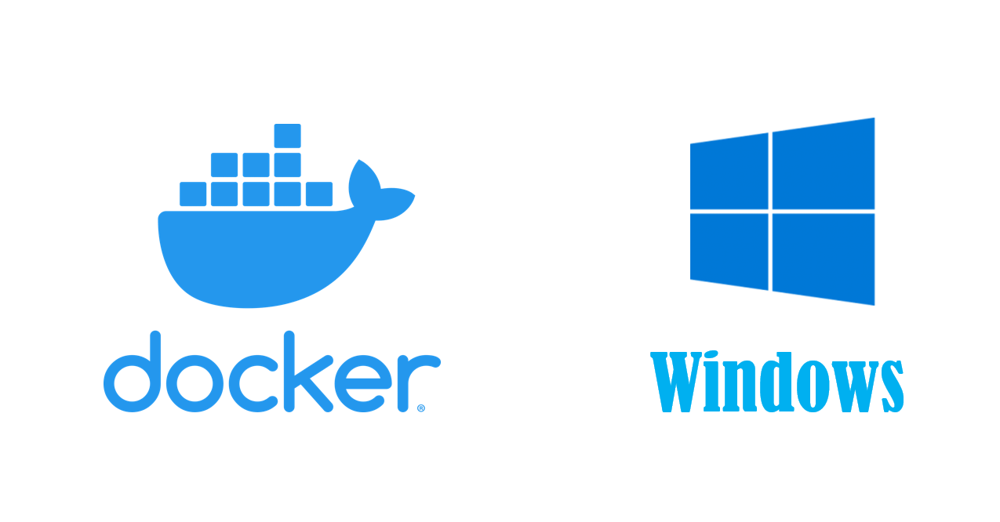
Create a local development environment
Once we installed Docker, we can download the required images from the official image repository.
Docker hub
https://hub.docker.com/
Pull the pyspark-notebook image
There are a lot of images released by Jupyter on the Docker Hub.
The pyspark-notebook image is an image containing Jupyter Notebook, Python, Spark.
You can use it to quickly create a local development environment of Spark.
pyspark-notebook image https://hub.docker.com/r/jupyter/pyspark-notebook
Open your terminal, pull the pyspark-notebook image.
docker pull jupyter/pyspark-notebook
It will take some time to download all the layers included in the image.
When all downloads are completed, the result will look as follows.
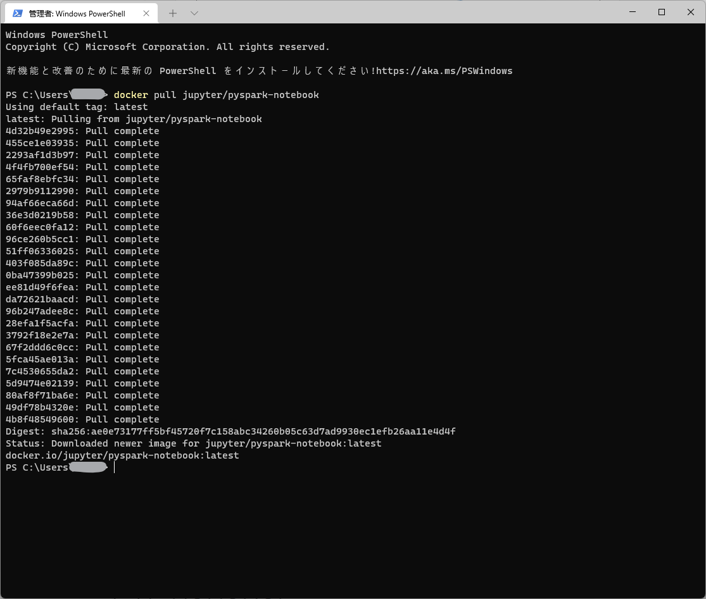
Start pyspark-notebook environment
Next, we will start a container based the above pulled image and create a local pyspark development environment.
Execute the command below.
docker run -p 8888:8888 jupyter/pyspark-notebook
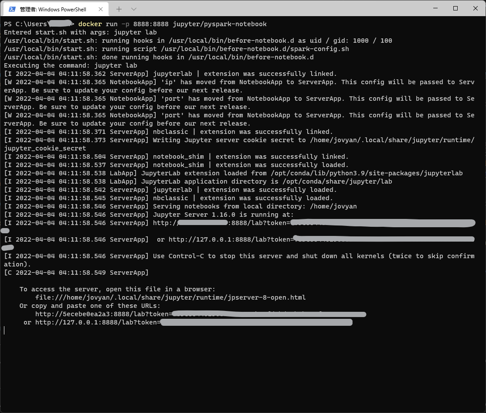
Test the enviroment
Now a notebook server is running, and let’s check everything is ok or not.
Firstly, let’s open the URL generated in the above execution in the browser.
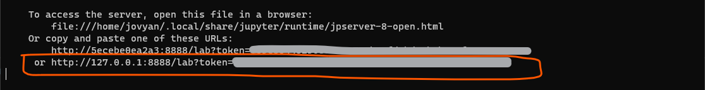
A notebook workspace will show up. And let’s create a Python3 Notebook.
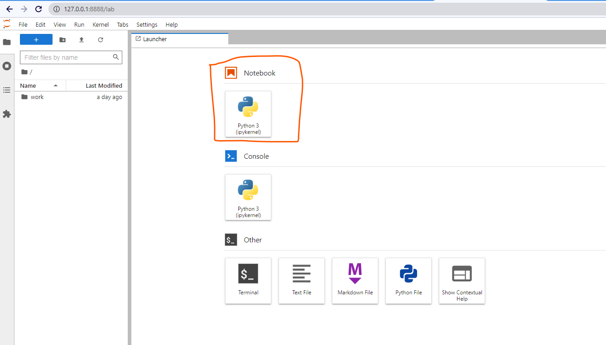
The untitled notebook will show.
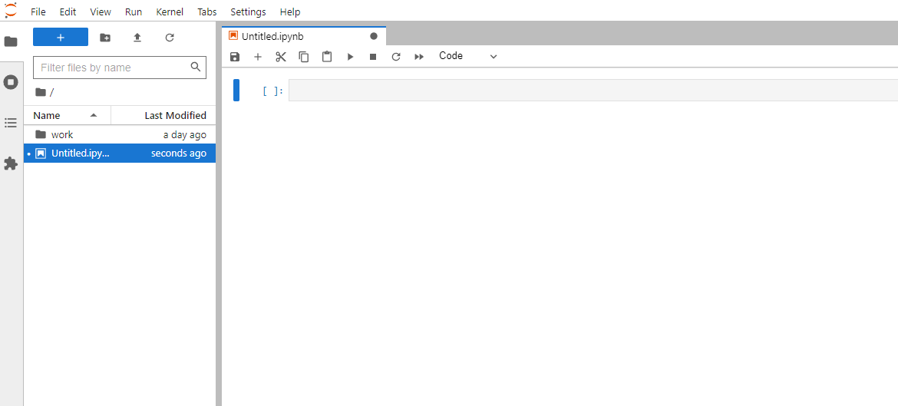
Prepare the data for test
To test if the Spark code will work in this environment, let’s prepare the well-known dataset iris.csv.
Firstly, create a new folder for data.
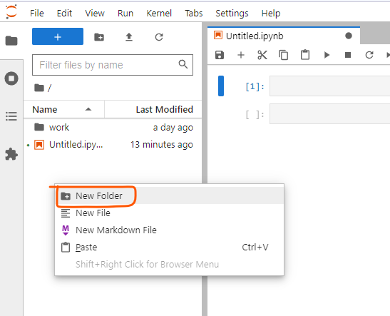
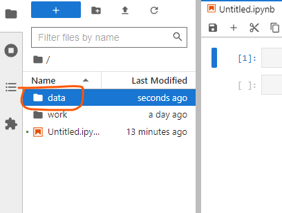
Download the iris.csv below
Upload the iris.csv
Open the data folder and upload the iris.csv file.
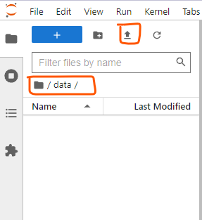
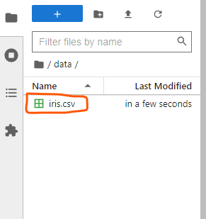
Create a SparkSession
Every spark application needs a SparkSession object. So let’s create a SparkSession object first.
from pyspark.sql import SparkSession
spark = SparkSession \
.builder \
.appName("MyApp") \
.getOrCreate()
Next, let’s read the uploaded csv file above.
df = spark.read.csv("data/iris.csv")
Let’s try to show the top 10 rows.
df.show(n=10)
The execution result is as follows.
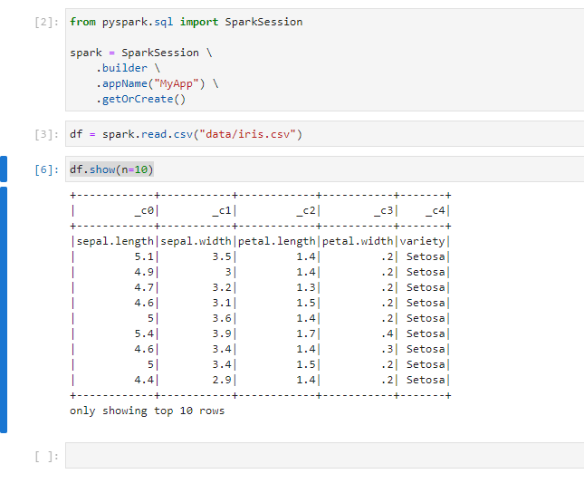
If you want to rename the name of the notebook, you can do like this.
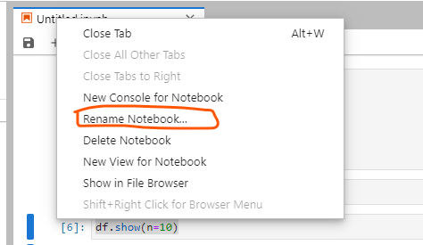
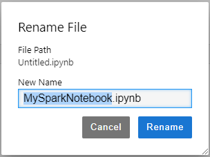
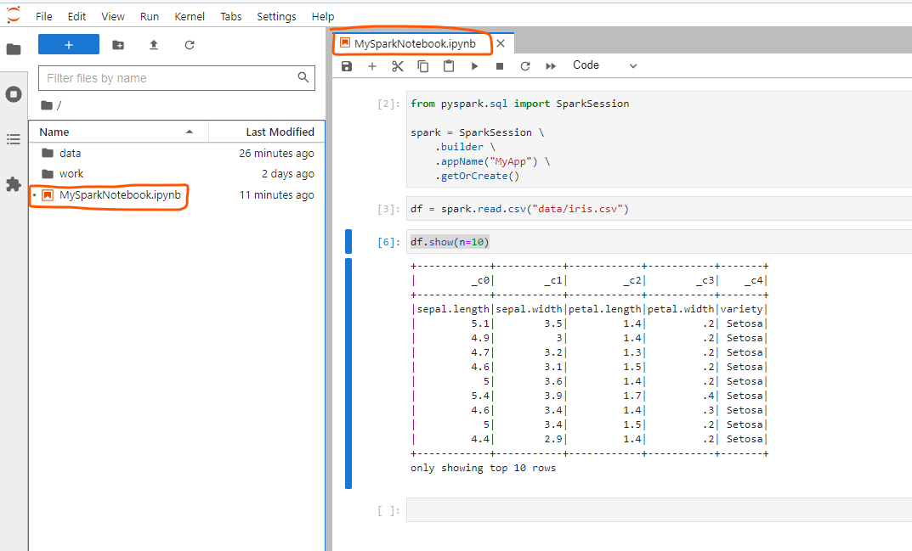
As you see, the environment is running normally.
Conclusion
We use Docker and pyspark-notebook image to create a local pyspark development environment with just two commands.
To test the environment, we prepared the well-known iris.csv file and read it using pyspark code.
For more data reading in Spark, you can read the article below.
Apache Spark » SparkSession, Create DataFrame
https://thats-it-code.com/apachespark/apachespark__sparksession-and-create-dataframe/